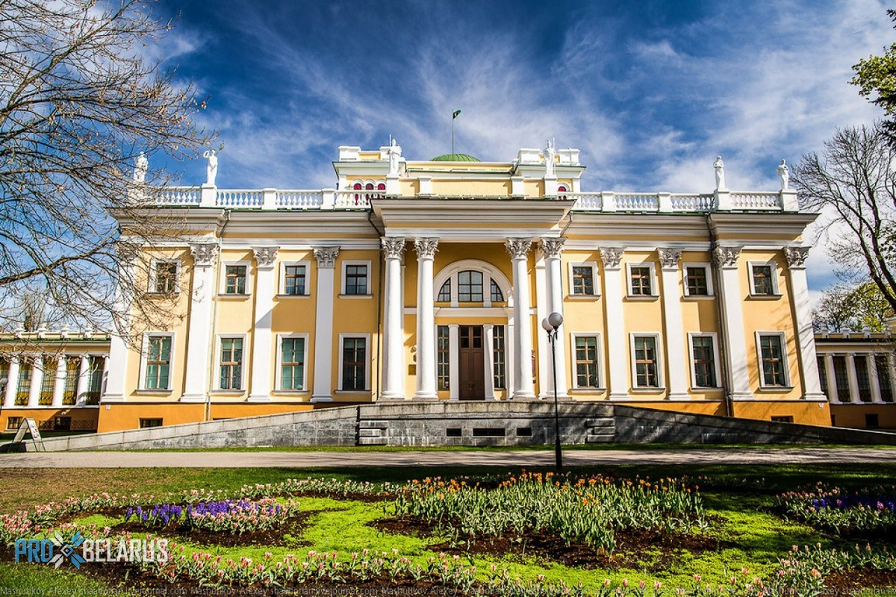
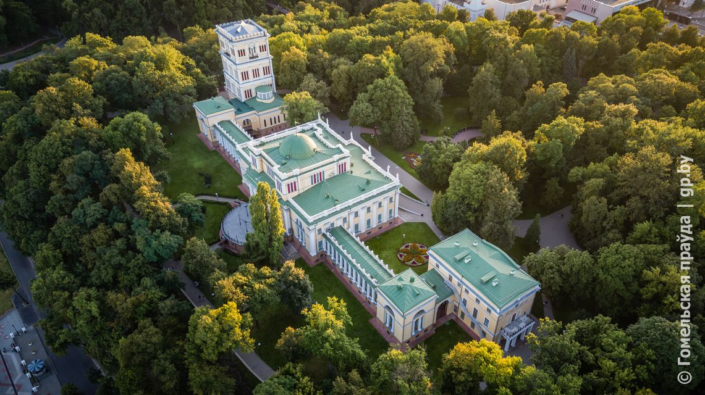

Гомельский дворцово-парковый ансамбль Румянцевых-паскевичей


В настоящее время государственное историко-культурное учреждение
"Гомельский дворцово-парковый ансамбль" - одно из старейших и наиболее
авторитетных музейных учреждений Республики Беларусь. В его состав входят
шесть музейных объектов. Дворцово-парковый комплекс включает: дворец
Румянцевых и Паскевичей - памятник архитектуры конца XVIII - середины XIX
вв., часовню-усыпальницу князей Паскевичей - памятник архитектуры
неорусского стиля конца XIX века, административное здание, "Зимний сад" и
смотровую башню - памятники архитектуры XIX века, старинный парк -
памятник природы и садово-паркового искусства середины XIX века. Объектом
государственного историко-культурного учреждения является также
дом-усадьба Халецких - памятник архитектуры середины XIX в., расположенный
в д. Хальч Ветковского района Гомельской области. Собрание музея
Гомельского дворцово-паркового ансамбля - одно из богатейших в Республике
Беларусь. В его фондах хранится более 260 000 предметов, в том числе 174
529 единиц основного фонда (на 01.01.2019 г.). Наиболее интересные
коллекции: мемориальные вещи семьи Паскевичей; археологическая и
нумизматическая коллекции; собрание рукописных и старопечатных книг;
этнографическая; иконописи и культовых предметов; морских организмов.
Достойное место в экспозициях и собраниях музея занимают материалы о
выдающихся государственных деятелях, военачальниках, представителях науки,
культуры, образования, жизнь и деятельность которых была связана с
историей края. Значимое место в собрании музея занимают коллекции
археологии, где представлены материалы из археологических раскопок на
территории области, находки, характеризующие материальную культуру наших
предков, найденные у д. Бердыж Чечерского района и с. Юровичи
Калинковичского района Гомельской области - самых древних из известных
стоянок первобытного человека на территории Беларуси. Наряду с большим
количеством традиционных экспонатов имеются и чрезвычайно редкие.
Гордостью музея являются многие индивидуальные находки периода Киевской
Руси: наконечник стрелы и вислая печать со знаками княжеской династии
Рюриковичей, клад шейных гривен, фрагмент панцирной кольчуги. Гордостью
книжной коллекции учреждения является Евангелие Петра Мстиславца, изданное
в 1575 году. Многие экспонаты занимают достойное место в Музейном фонде
Республики Беларусь. В их числе - клад культовых предметов XVIII -XIX
веков, найденный недалеко от Гомеля на территории бывшего Чёнковского
монастыря. Ему придан статус историко-культурной ценности Республики
Беларусь. В 2011 году фондам музея была передана в дар уникальная икона -
Минея годовая в золоченой резной раме и киоте. Собрание фотодокументов
характеризует исторические события, происходившие на территории Гомельской
области в разные периоды. Особую ценность представляют мемориальные
комплексы Генерального авиаконструктора П.О. Сухого, бывшего министра
иностранных дел СССР А.А. Громыко. Современное изобразительное искусство
представлено произведениями художников и скульпторов Гомельщины и Беларуси
в целом. Постоянный интерес у посетителей музея вызывают работы Б.Ф.
Звиногродского, В.Ф. Казаченко, В.К. Цвирко, Н.К. Казакевича, Р. Е.
Ландарского, Д.И. Алейника. За последние годы собрание живописи
пополнилось работами современных белорусских художников - Крылова А.В.,
Денисенко В.Ф., Курашовой С.Л., Зуевой Л.М., Шабалтас А.Н., Осиповых А.С.
и А.И. Уникальными являются предметы, принадлежавшие в прошлом владельцам
Гомельского имения. Несмотря на то, что это собрание невелико, оно
является наиболее значимым в республике, так как даёт представление об
убранстве богатых дворянских усадеб конца XIX в. Государственное
историко-культурное учреждение "Гомельский дворцово-парковый ансамбль"
занимает достойное место среди учреждений культуры республики уже более
100 лет. Как и всегда, его двери широко распахнуты для тех, кого увлекает
история, культура и искусство.